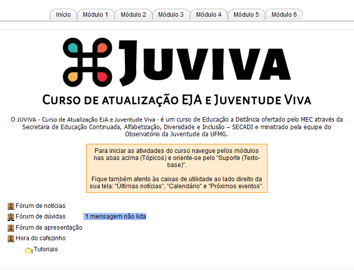

Iniciando o mosaico
Car@ cursista,
Para a realização deste curso, utilizaremos a plataforma MOODLE (acrônimo de Modular Object Oriented Dynamic Learning Environment, em português “Ambiente de Aprendizagem Dinâmico Orientado a Objeto Modular"), um programa destinado ao desenvolvimento e à implementação de ambientes virtuais de ensino e de aprendizagem.
Este manual foi desenvolvido para o curso de atualização EJA e Juventude Viva (JUVIVA) com o objetivo de apresentar o Moodle aos cursistas visando facilitar a ambientação nos recursos tecnológicos do ambiente virtual de aprendizagem que serão utilizados durante o processo formativo.
Mas afinal, o que é o MOODLE?
O MOODLE é uma ferramenta de gestão de cursos a distância. É um software livre desenhado para ajudar educadores a criar, com facilidade, cursos online de qualidade. Essas ferramentas, como o Moodle, são chamadas de LMS (Learning Management Systems, que significa Sistemas de Gerenciamento de Aprendizagem) ou AVA (Ambientes Virtuais de Aprendizagem).
Através dele é possível gerenciar cursos pela Internet, com o uso de recursos voltados para a interatividade entre usuários e a publicação de conteúdos, além de permitir o controle e a avaliação, à distância, das atividades desenvolvidas.
Dica:
Não tenha medo de experimentar, conhecer o ambiente. Clique nos itens que compõem a plataforma, explore, conheça nosso ambiente de trabalho.
Além do MOODLE, outro ambiente de interatividade entre a nossa equipe e você, cursista, é o site do JUVIVA: http://observatoriodajuventude.ufmg.br/juviva. Nele você tem acesso a:
- Informações gerais do curso,
- Notícias, fotos e vídeos,
- Calendário de atividades,
- Informações sobre inscrição,
- Tutoriais,
- Formulário de contato,
- Telefones e e-mails importantes.
Você pode aprender mais sobre o Moodle lendo o artigo sobre a plataforma na Wikipedia ou visitando a Comunidade Moodle (em inglês).
Boa leitura e bom trabalho,
Ana Paula e Lucas
Guia de boas práticas para navegar na internet
Agora que você conhece melhor o Moodle, apresentamos abaixo algumas dicas para que você tenha uma melhor experiência de navegação pelo conteúdo do curso e pela internet de um modo geral.
1 Utilize um bom navegador de internet
Se você não utiliza o Mozilla Firefox ou o Google Chrome, faça o download de um desses navegadores nos links abaixo:

2 Dicas e atalhos
Tanto no Google Chrome quanto no Mozilla Firefox, você pode abrir um link em uma nova aba(Firefox)/guia(Chrome) do navegador, clicando com o botão direito do mouse no link que você deseja abrir e, em seguida, clique em "Abrir link em uma nova guia":

A nova guia/aba estará aberta na mesma janela do navegador (grifado em vermelho na imagem abaixo):

Dica:
Alguns atalhos no teclado:
- Se seu navegador vem lhe entregando páginas desatualizadas, pressione F5 para atualizar a página.
- Para encontrar texto em uma página pressione as teclas Ctrl + F e digite o termo de busca.
3 Tenha paciência!
Se sua conexão for lenta, tenha paciência e espere a página abrir para continuar a navegar pelo curso.
Conhecendo o ambiente
Ao clicar no nome do curso, você entrará na página inicial de sua turma no Moodle, na qual encontrará caixas de utilidades, localizadas nas laterais e a programação do curso, localizada no centro.
Confira na imagem abaixo:Agora, vamos conhecer melhor os recursos e ferramentas que o Moodle oferece:
1 Caixas de utilidades
As caixas de utilidade estão distribuídas nas laterais da coluna de programação e disponibilizam os recursos do ambiente. A ordem das caixas pode estar em uma ordem diferente na sua turma.
Atividades
Caixa que dá acesso aos fóruns, às escolhas e às demais atividades do curso, separadamente em uma lista. Ao clicar em um item, todas as atividades deste modelo disponíveis para você no seu curso serão exibidas em uma nova página.
Navegação
Caixa que lhe permite navegar facilmente pelo Moodle. Através dessa caixa você pode acessar a página inicial onde se encontra o curso no qual você foi inscrito e as páginas do seu site, ou seja, as suas áreas pessoais no Moodle como o Blog. Nesta caixa você também tem acesso ao seu Perfil, às mensagens e tópicos que você publicou nos fóruns (“Mensagens do fórum”), suas mensagens pessoais (“Mensagens”), à lista de Participantes de sua turma e aos tópicos (Módulos) do curso.
Configurações
Em “Administração do curso”, você poderá conferir suas Notas. Em “Minhas configurações de perfil”, é possível modificar e atualizar seu perfil.
Participantes
Lista os participantes do curso, o que possibilita a visualização dos perfis de todos os participantes, assim como o envio de mensagens individuais ou para grupos.
Últimas notícias
A caixa de utilidade Últimas notícias exibe as últimas postagens publicadas no Fórum de Notícias.
Calendário
Ferramenta que funciona como uma agenda do curso, além de permitir que o usuário insira seus próprios eventos. Na figura podemos observar três eventos marcados: os eventos dos dias 20/01 e 24/01, em rosa, são eventos do curso, todos os cursistas tem acesso. o evento do dia 22/01, em azul, é um evento pessoal do cursista, somente ele tem acesso. Um evento global é um evento que envolve todos os cursos correspondentes ao servidor da UFMG. Um evento de grupo diz respeito ao grupo que você faz parte no curso. Estes dois últimos tipos de eventos não serão utilizados em nosso curso.
Próximos eventos
Exibe os próximos eventos marcados no Calendário do Moodle. Na imagem ao lado, você pode observar que os exemplos de eventos marcados no calendário acima são exibidos aqui nesta caixa de utilidade.

Mensagens
Caixa onde ficam as mensagens recebidas pelos usuários. Essa caixa informa se há mensagens ainda não lidas (ou pendentes).
Ao acessar o curso, se você tiver novas mensagens, aparecerá um quadro de aviso de nova mensagem no canto inferior direito do seu navegador, como na imagem ao lado.
Clique em Ir para mensagens para visualizá-la, ou Ignorar para fechar o quadro de aviso.
2 Programação
A programação do curso fica no meio da tela do ambiente virtual. Ao acessar sua turma, você verá a área principal da sala (aba Tópico 0), onde se encontram o Fórum de Notícia, o Fórum de Dúvidas, Hora do Cafezinho (um fórum para “jogar conversa fora”) e o Fórum de Apresentação. Além disso, nesta área inicial há um quadro com recados e lembretes importantes (como o quadro amarelo na imagem abaixo). Portanto, lembre-se sempre de conferir os fóruns e recados.
Como o curso é modular, cada aba de tópico (confira na imagem abaixo) corresponde a um módulo do curso. Assim, o Tópico 1 corresponde ao Módulo 1, o Tópico 2, ao Módulo 2 e assim por diante. Basta clicar na aba do Tópico/Módulo que você deseja para ter acesso aos conteúdos e atividades daquele módulo.
Na imagem abaixo você pode ver a programação do Módulo 1 ou Tópico 1. Diferente do "Tópico 0" aqui você tem acesso ao conteúdo específico do módulo, ou seja:
- a ementa;
- as unidades (caso o módulo tenhas unidades);
- o Suporte (Texto-Base), que abriga o texto-base de cada unidade ou do módulo como um todo;
- as atividades que podem ser fóruns de discussão (Compartilhando fragmentos) e/ou envio de portfólios (Compondo o mosaico)
Os textos do curso são acessados sempre pelo link Suporte (Texto-base) que pode ser identificado pelo ícone  . Clique no link para ter acesso aos textos do Módulo. Para ter acesso ao Fórum, clique no link do respectivo Fórum.
. Clique no link para ter acesso aos textos do Módulo. Para ter acesso ao Fórum, clique no link do respectivo Fórum.
As atividades da Unidade de todo Módulo, ficam sempre abaixo do Suporte (Texto-base).
Ao acessar o link Suporte (Texto-base) do Módulo, você será redirecionado para uma página como esta da imagem abaixo:
O exemplo acima é do Módulo 1. Os Suportes (Textos-base) de todos os Módulos são parecidos e cada módulo é identificado por uma cor diferente:
Todo o conteúdo do módulo estará disposto nesta página e a navegação é feita descendo a barra de rolagem do navegador ou pelo menu lateral esquerdo, clicando no nome de cada capítulo:
Atualizando seu perfil
Para atualizar seu perfil, clique em “Minhas configurações de perfil”, localizado na caixa “Configurações”, na lateral esquerda da página, e, em seguida, clique em “Modificar meu perfil”, onde está sublinhado em vermelho na imagem abaixo:
A tela de modificação de perfil irá abrir. Nela existem múltiplas opções para alterar seu perfil, sendo que os marcados em vermelho são de preenchimento obrigatório, como você pode ver na imagem abaixo:
Preencha os campos com seus dados e outras informações que você deseja adicionar em seu perfil e clique no botão Atualizar Perfil, localizado no final da página.
Dica:
Você sabia que você pode tirar algumas de suas dúvidas no próprio Moodle?
Em alguns locais da plataforma você vai encontrar o ícone . Ao clicar nele, a própria plataforma te dá a explicação do item, como podemos ver na imagem abaixo:
Esse pode ser o seu primeiro recurso ao ter dúvida quanto ao funcionamento de alguma coisa no Moodle.
Importante!
Algumas recomendações:
- É importante que você preencha seu nome e sobrenome reais, de preferência sem utilizar apelidos, porque ele será o nome que constará no seu certificado ao fim do curso;
- Não deixe de colocar uma foto sua para tornarmos nossa interação mais pessoal;
- Escreva sobre você no campo "Descrição" para que seus colegas, tutores e professor formador possam te conhecer melhor;
- Pedimos que você não modifique a senha para facilitar a recuperação caso você a esqueça;
- Caso deseje, você pode modificar seu endereço de e-mail para receber as notificações do Moodle em outro endereço, mas o seu Nome de usuário, para acesso à plataforma, continuará sendo o e-mail antigo, com o qual você foi cadastrado na plataforma, não sendo possível modificá-lo.
Atividade: Fórum
O Fórum é uma atividade de discussão assíncrona que permite a interação entre os cursistas, professor e tutores sobre um determinado assunto. O curso JUVIVA propõe a realização de um fórum de discussão por módulo, chamado Compartilhando fragmentos, identificados pelo ícone .
Existem dois tipos de fóruns que são utilizado no JUVIVA:
- Fórum geral - é um fórum aberto, onde todos os participantes podem iniciar um novo tópico de discussão quando quiserem.
- Discussão simples - é um único tópico em uma única página. Normalmente é usado para organizar discussões com foco em um tema preciso.
Fórum geral
Ao entrar em um Fórum geral, o usuário encontrará a página inicial desse recurso, com a lista de tópicos de discussão. Para acessar determinado tópico, clique sobre o título do tópico desejado.

Para contribuir em um tópico ou comentar uma mensagem, clique sobre o link “Responder”, localizado abaixo do texto de cada tópico ou mensagem.
Você pode respoder tanto ao tópico aberto quanto comentar a resposta de alguém ao tópico, dependendo de qual "Responder" você clicar.

No exemplo acima há uma resposta da Ana Paula ao tópico aberto pelo Lucas (marcado em vermelho) e uma resposta da Ana Paula à mensagem do Lucas (marcado em verde). Se em uma atividade de Fórum, por exemplo, for solicitado responder ao tópico aberto pelo professor, então você deve clicar no link “Responder” do tópico aberto pelo professor (em vermelho na imagem). Se quiser comentar a resposta de um colega, clique no “Reponder” da mensagem postada pelo colega (em verde na imagem). É assim que um Fórum funciona e é assim que ele permanece organizado.
Ao criar um nóvo tópico ou responder a um tópico já existente, o ambiente irá apresentar uma caixa de texto com os seguintes campos:
- Assunto: normalmente o ambiente insere o título de resposta automaticamente, que também pode ser alterado pelo usuário.
- Mensagem: local em que o usuário insere o texto.
- Subscrição (opcional): envia as mensagens deste Fórum para o e-mail do usuário.
- Anexo (opcional): Clicando no botão Adicionar,é possível enviar ao servidor um único arquivo como anexo de cada mensagem do fórum. Confira o capítulo 5 acima, em Envio de arquivos.

Após preencher os campos, para enviar a mensagem, clique sobre o botão “Enviar mensagem ao fórum”. Para modificar a mensagem após o envio clique sobre o link “Editar”, localizado abaixo do texto de cada mensagem enviada pelo usuário. A alteração do texto só será possível dentro do período de 30 minutos, contados a partir do envio da mensagem.
Para apagar a mensagem enviada, clique sobre o link “Excluir”, localizado abaixo do texto de cada mensagem enviada pelo usuário.
Fórum de Discussão simples
Diferente do Fórum Geral, o Fórum de Discussão simples não possui tópicos. Ao clicar no link do fórum você entra diretamente no espaço de discussão.

Para facilitar sua navegação no fórum de discussão simples, recomendamos que você reorganize as postagens selecionando a opção "Mostrar respostas começando pela mais antiga" como mostrado na imagem abaixo. Desta forma você poderá acompanhar a discussão mantendo a orientação do tutor ou professor no topo e os comentários de seus colegas abaixo na ordem que foram postadas.
Atividade: Envio de arquivos
Car@ cursista,
Para a realização deste curso, utilizaremos a plataforma MOODLE (acrônimo de Modular Object Oriented Dynamic Learning Environment, em português “Ambiente de Aprendizagem Dinâmico Orientado a Objeto Modular"), um programa livre, destinado ao desenvolvimento e à implementação de ambientes virtuais de ensino e de aprendizagem.
Este manual foi desenvolvido para o curso de atualização EJA e Juventude Viva (JUVIVA) com o objetivo de apresentar o Moodle aos cursistas visando facilitar a ambientação nos recursos tecnológicos do ambiente virtual de aprendizagem que serão utilizados durante o processo formativo.
Muitas são as perguntas sobre as relações entre territórios e culturas juvenis, não é mesmo? Neste Eixo Temático, convidamos você a refletir sobre elas a partir de uma discussão que entrelaça territórios juvenis, culturas, poder e violência. Consideramos que tais aspectos são muito importantes para ampliarmos nosso olhar sobre os jovens, sobretudo em função da nossa atuação no Programa “Juventude Viva”. No Brasil, por exemplo, os esforços de enfrentamento à violência e inclusão social de jovens - especialmente negros/as, principais vítimas de homicídio no país -, têm sido realizados prioritariamente em espaços atingidos por elevados índices de violência. São os chamados “territórios com demandas urgentes”, localizados, principalmente, nos grandes centros urbanos. De acordo com o Mapa da Violência no Brasil (Waiselfisz, 2012), entre 2002 e 2010, houve uma queda no número absoluto de homicídios na população branca e aumento nos números na população negra e jovem metropolitana. Tal fato realça a relevância da temática aqui abordada e justifica nossa escolha por uma abordagem focada nas juventudes urbanas.
Nas próximas páginas, buscaremos compreender algumas diferenças e desigualdades territoriais no que se refere à presença e à ausência de grupos juvenis e suas produções culturais, à visibilidade e/ou estigmas que esses sujeitos obtêm através das suas produções estéticas, entre outros aspectos. Ao longo da leitura, tente se perguntar: como trabalhar no interior da escola com as vivências trazidas pelos estudantes em seus territórios, seus conhecimentos e práticas nos processos educativos? Muitas outras perguntas surgirão ao longo do caminho. Convidamos você para refletir conosco. Seja bem vind@!
Boa leitura e bom trabalho,
Álida , Gerson e Juliana
Participantes
Car@ cursista,
Para a realização deste curso, utilizaremos a plataforma MOODLE (acrônimo de Modular Object Oriented Dynamic Learning Environment, em português “Ambiente de Aprendizagem Dinâmico Orientado a Objeto Modular"), um programa livre, destinado ao desenvolvimento e à implementação de ambientes virtuais de ensino e de aprendizagem.
Este manual foi desenvolvido para o curso de atualização EJA e Juventude Viva (JUVIVA) com o objetivo de apresentar o Moodle aos cursistas visando facilitar a ambientação nos recursos tecnológicos do ambiente virtual de aprendizagem que serão utilizados durante o processo formativo.
Muitas são as perguntas sobre as relações entre territórios e culturas juvenis, não é mesmo? Neste Eixo Temático, convidamos você a refletir sobre elas a partir de uma discussão que entrelaça territórios juvenis, culturas, poder e violência. Consideramos que tais aspectos são muito importantes para ampliarmos nosso olhar sobre os jovens, sobretudo em função da nossa atuação no Programa “Juventude Viva”. No Brasil, por exemplo, os esforços de enfrentamento à violência e inclusão social de jovens - especialmente negros/as, principais vítimas de homicídio no país -, têm sido realizados prioritariamente em espaços atingidos por elevados índices de violência. São os chamados “territórios com demandas urgentes”, localizados, principalmente, nos grandes centros urbanos. De acordo com o Mapa da Violência no Brasil (Waiselfisz, 2012), entre 2002 e 2010, houve uma queda no número absoluto de homicídios na população branca e aumento nos números na população negra e jovem metropolitana. Tal fato realça a relevância da temática aqui abordada e justifica nossa escolha por uma abordagem focada nas juventudes urbanas.
Nas próximas páginas, buscaremos compreender algumas diferenças e desigualdades territoriais no que se refere à presença e à ausência de grupos juvenis e suas produções culturais, à visibilidade e/ou estigmas que esses sujeitos obtêm através das suas produções estéticas, entre outros aspectos. Ao longo da leitura, tente se perguntar: como trabalhar no interior da escola com as vivências trazidas pelos estudantes em seus territórios, seus conhecimentos e práticas nos processos educativos? Muitas outras perguntas surgirão ao longo do caminho. Convidamos você para refletir conosco. Seja bem vind@!
Boa leitura e bom trabalho,
Álida , Gerson e Juliana
Mensagens privadas
Para a realização deste curso, utilizaremos a plataforma MOODLE (acrônimo de Modular Object Oriented Dynamic Learning Environment, em português “Ambiente de Aprendizagem Dinâmico Orientado a Objeto Modular"), um programa livre, destinado ao desenvolvimento e à implementação de ambientes virtuais de ensino e de aprendizagem.
Este manual foi desenvolvido para o curso de atualização EJA e Juventude Viva (JUVIVA) com o objetivo de apresentar o Moodle aos cursistas visando facilitar a ambientação nos recursos tecnológicos do ambiente virtual de aprendizagem que serão utilizados durante o processo formativo.
Muitas são as perguntas sobre as relações entre territórios e culturas juvenis, não é mesmo? Neste Eixo Temático, convidamos você a refletir sobre elas a partir de uma discussão que entrelaça territórios juvenis, culturas, poder e violência. Consideramos que tais aspectos são muito importantes para ampliarmos nosso olhar sobre os jovens, sobretudo em função da nossa atuação no Programa “Juventude Viva”. No Brasil, por exemplo, os esforços de enfrentamento à violência e inclusão social de jovens - especialmente negros/as, principais vítimas de homicídio no país -, têm sido realizados prioritariamente em espaços atingidos por elevados índices de violência. São os chamados “territórios com demandas urgentes”, localizados, principalmente, nos grandes centros urbanos. De acordo com o Mapa da Violência no Brasil (Waiselfisz, 2012), entre 2002 e 2010, houve uma queda no número absoluto de homicídios na população branca e aumento nos números na população negra e jovem metropolitana. Tal fato realça a relevância da temática aqui abordada e justifica nossa escolha por uma abordagem focada nas juventudes urbanas.
Nas próximas páginas, buscaremos compreender algumas diferenças e desigualdades territoriais no que se refere à presença e à ausência de grupos juvenis e suas produções culturais, à visibilidade e/ou estigmas que esses sujeitos obtêm através das suas produções estéticas, entre outros aspectos. Ao longo da leitura, tente se perguntar: como trabalhar no interior da escola com as vivências trazidas pelos estudantes em seus territórios, seus conhecimentos e práticas nos processos educativos? Muitas outras perguntas surgirão ao longo do caminho. Convidamos você para refletir conosco. Seja bem vind@!